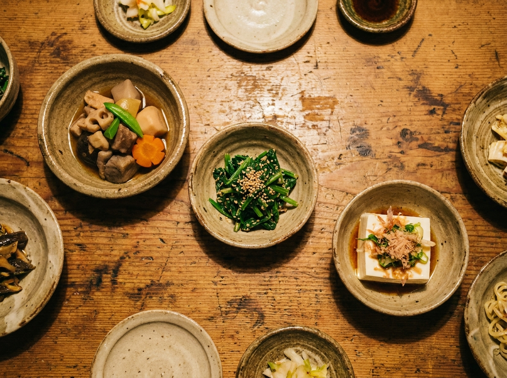
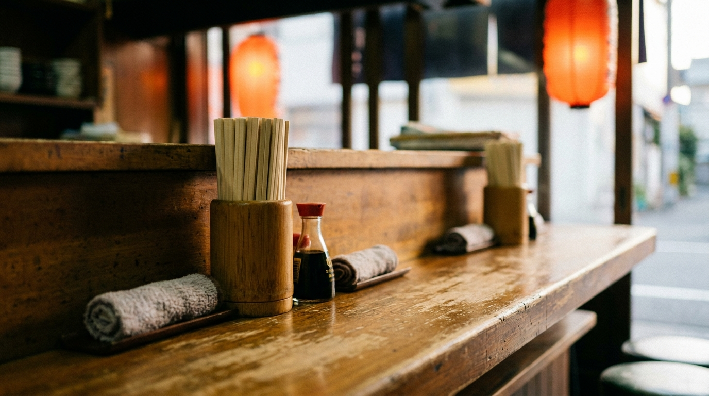

選べるお通し
席につくと、数種類のお通しから選べます。クチコミでも評判の、はじめの一品です。
KATEI-RYORI IZAKAYA — KAMIFUKUOKA
何を食べても、という声の集まる家庭料理の居酒屋。
上福岡の、女将さんのお店です。
火〜土 16:00〜23:00 ／ 日・月 定休
※画像はイメージです
ABOUT
上福岡駅の東口から歩いて3分ほど。カウンターと小上がりの、こぢんまりとした家庭料理の居酒屋です。気さくな女将さんが切り盛りする、ひとりでも入りやすいお店。
席につくと、選べるお通しから。そこから家庭料理の数々が並びます。「何を食べても間違いない」「ただいまと言いたくなる暖かいお店」——クチコミでも、そんな声の集まる、地元で愛されるお店です。

何を食べても、という声の集まるお店。
※画像はイメージです
SHOP INFO
| 店名 | 家庭料理 ますみ家 本店 |
|---|---|
| 住所 | 埼玉県ふじみ野市上福岡1-14-32 令和ビル |
| アクセス | 上福岡駅 東口 徒歩約3分 |
| 営業時間 | 火〜土 16:00〜23:00 |
| 定休日 | 日曜・月曜 |
| 電話 | 049-293-1610 |
CONTACT
ご予約・お問い合わせは、お電話でどうぞ。週末は混み合いますので、ご予約がおすすめです。